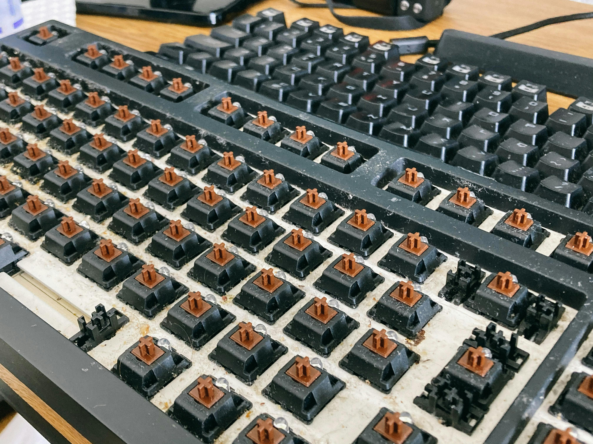

Mecánico vs. Membrana: La Batalla por tus Dedos
En el mundo de los periféricos, pocas decisiones son tan personales y debatidas como la elección del teclado. Las dos tecnologías dominantes son los teclados mecánicos y los de membrana. Aunque ambos cumplen la misma función, la experiencia de uso es radicalmente diferente. Analicemos sus diferencias para que puedas decidir cuál es el arma adecuada para ti.
Teclados de Membrana: El Estándar Silencioso
Son los teclados que encuentras en la mayoría de oficinas y ordenadores portátiles. Funcionan con una membrana de goma bajo las teclas. Al presionar una tecla, un domo de goma se comprime y hace contacto con el circuito inferior, registrando la pulsación.
- Ventajas: Son silenciosos, ligeros y económicos de producir.
- Desventajas: La sensación de escritura es a menudo descrita como "blanda" o "gomosa". Requieren presionar la tecla hasta el fondo (bottom-out) para registrarse, lo que puede causar fatiga. Suelen tener una vida útil más corta.
Teclados Mecánicos: Precisión y Personalización
Cada tecla tiene su propio interruptor mecánico individual (switch). Estos switches vienen en diferentes "sabores" (lineales, táctiles, clicky), cada uno con una sensación y sonido distintos. El punto de actuación (cuando la tecla se registra) está a mitad de recorrido, no al fondo.
- Ventajas: Ofrecen una respuesta táctil y/o auditiva superior, lo que mejora la precisión y velocidad. No es necesario pulsar hasta el fondo, reduciendo la fatiga. Son extremadamente duraderos y personalizables (puedes cambiar las teclas o incluso los switches).
- Desventajas: Son más ruidosos, pesados y, por lo general, mucho más caros.
¿Cuál Deberías Elegir?
La respuesta depende de tu uso y preferencia:
- Para el escritor prolífico o programador: Un teclado mecánico (táctil o lineal) es una inversión que mejorará drásticamente tu comodidad y eficiencia.
- Para el gamer competitivo: Los switches lineales de los teclados mecánicos ofrecen una actuación rápida y suave, ideal para juegos de acción.
- Para la oficina o entornos silenciosos: Un teclado de membrana o un mecánico con switches silenciosos son la mejor opción para no molestar a los demás.
- Para el usuario ocasional con presupuesto limitado: Un teclado de membrana es más que suficiente.
La mejor forma de saberlo es probándolos. Pero si te tomas en serio la mecanografía, dar el salto a un teclado mecánico es, para muchos, un viaje de ida.
← Volver a todos los artículos